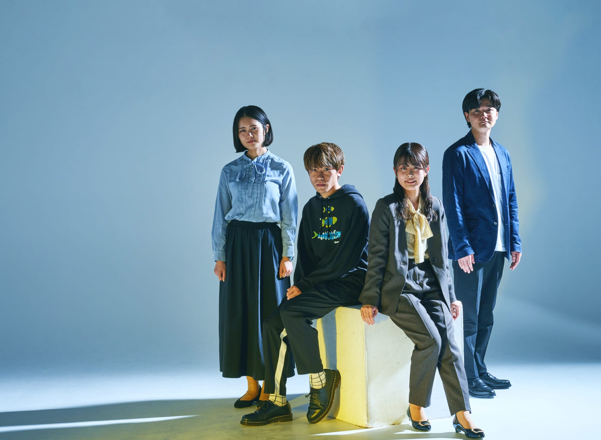
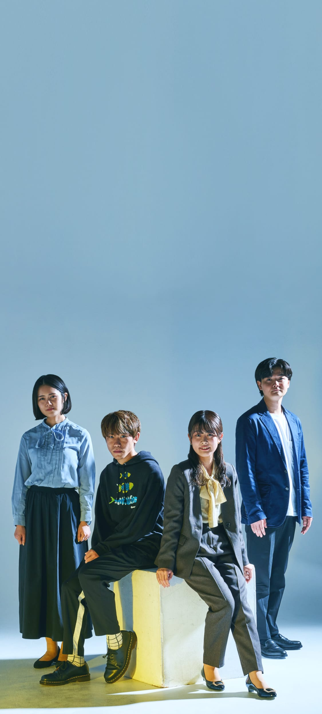
4TH
YEAR
TRUTH
4TH YEAR TRUTH
4年目の
本音。
本音。
社員座談会
新卒で入社して4年目を迎えた4人。想像を超えていたり、イメージと違っていたり。経験を積んだ今だからこそ見えてきた、東映で働くリアルとは。4年目の本音を、心のままに語っていただきました。
※所属・仕事内容は取材当時
MEMBER
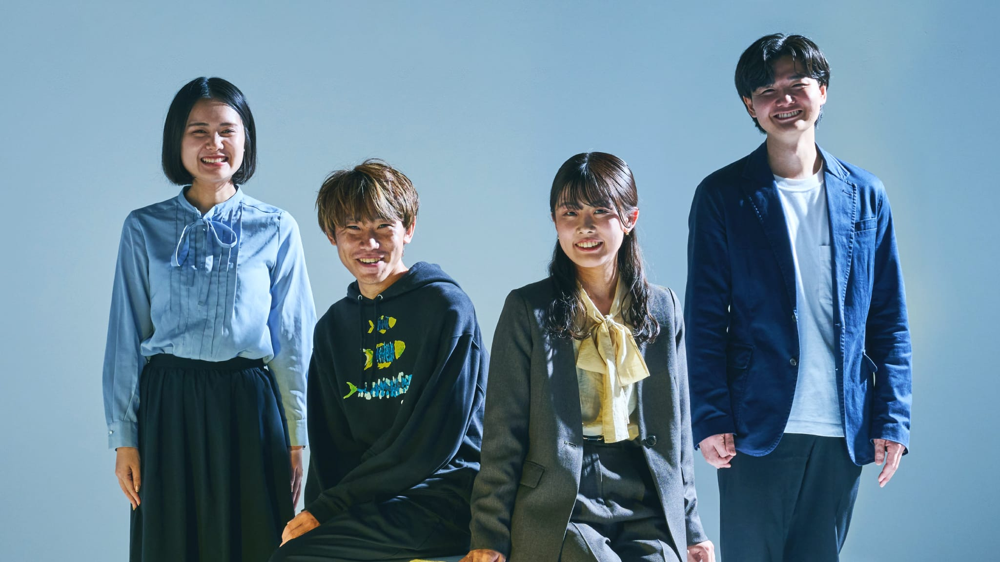
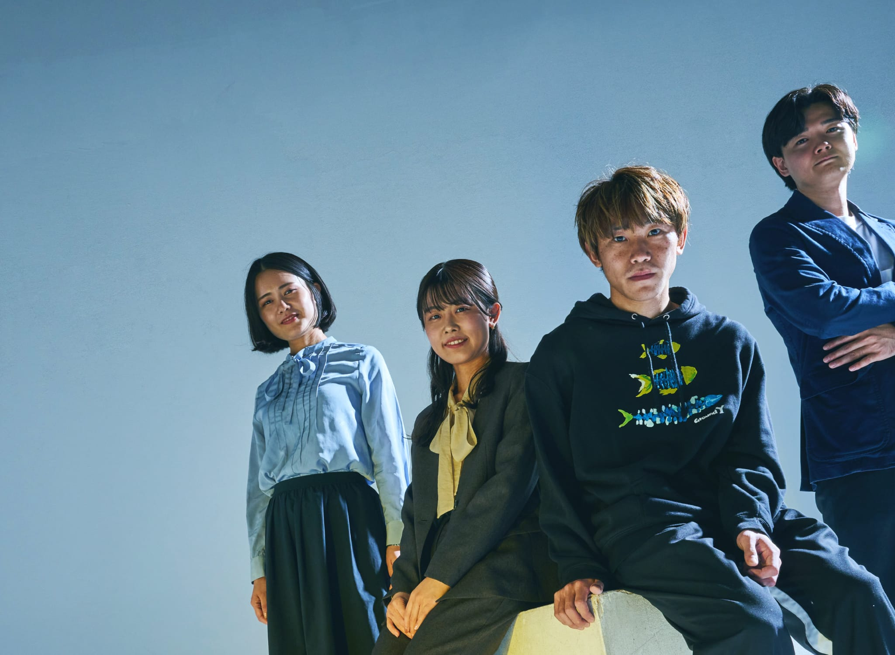
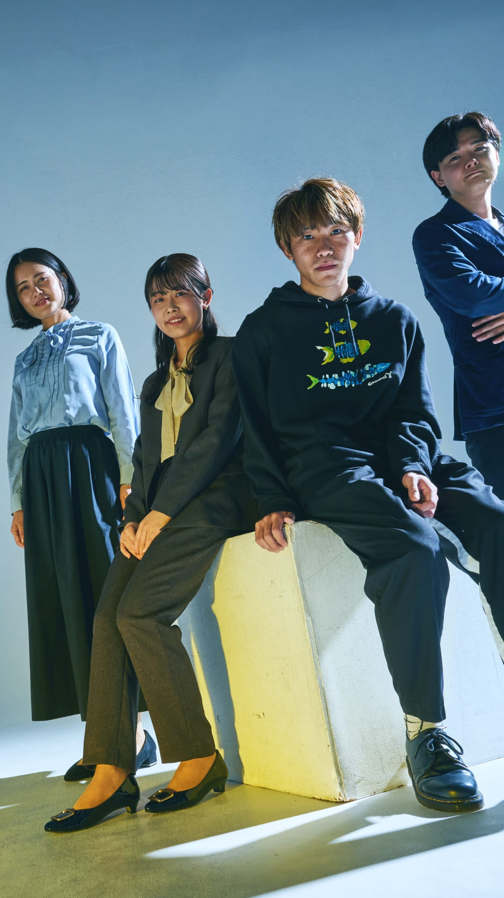
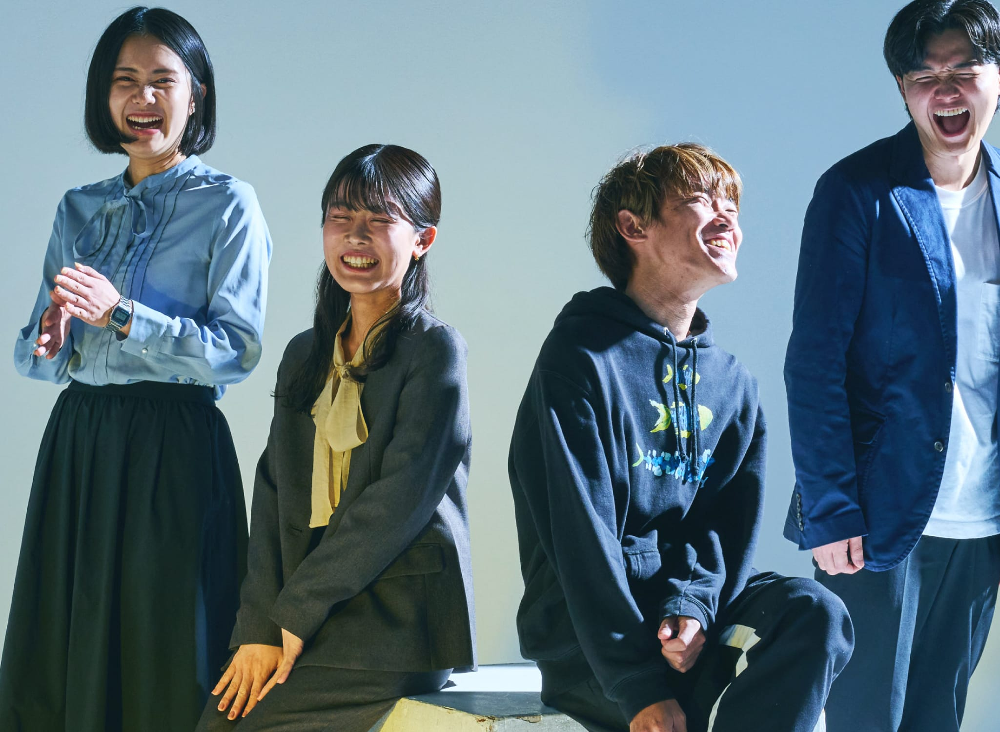
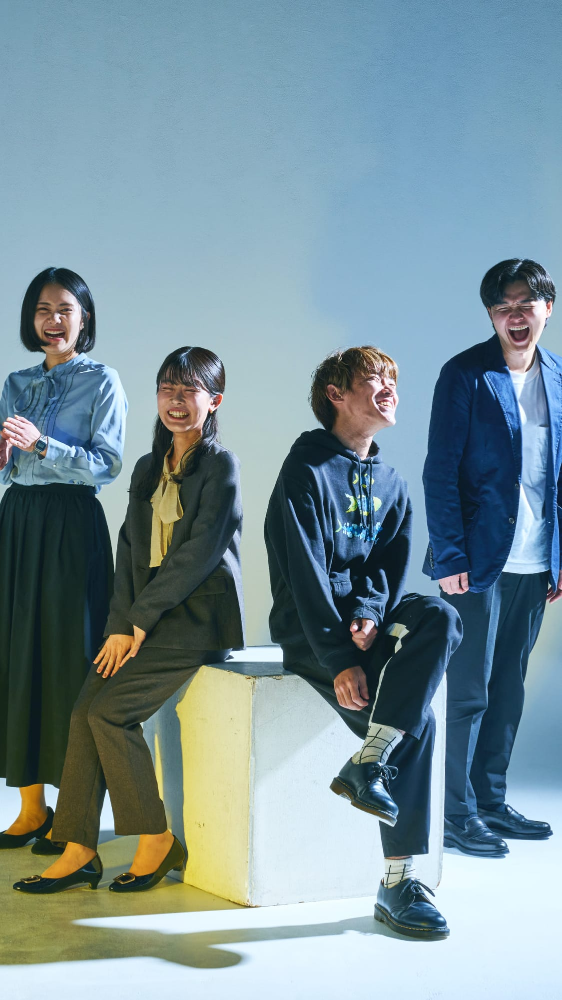
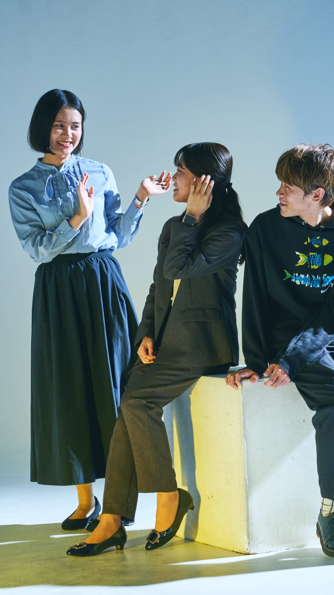
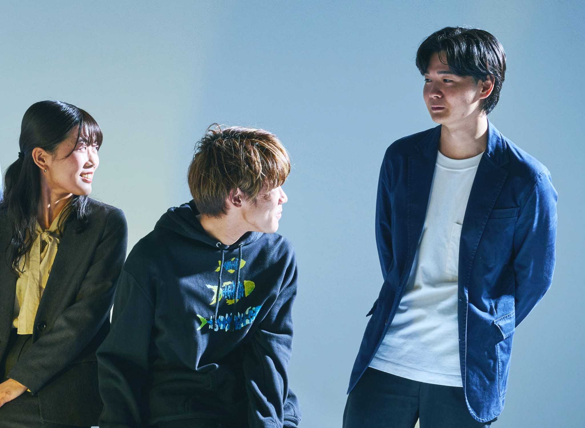
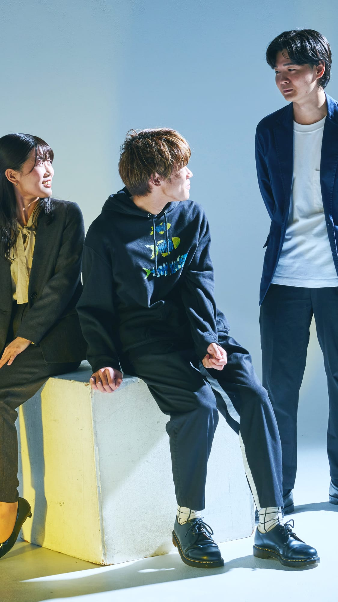
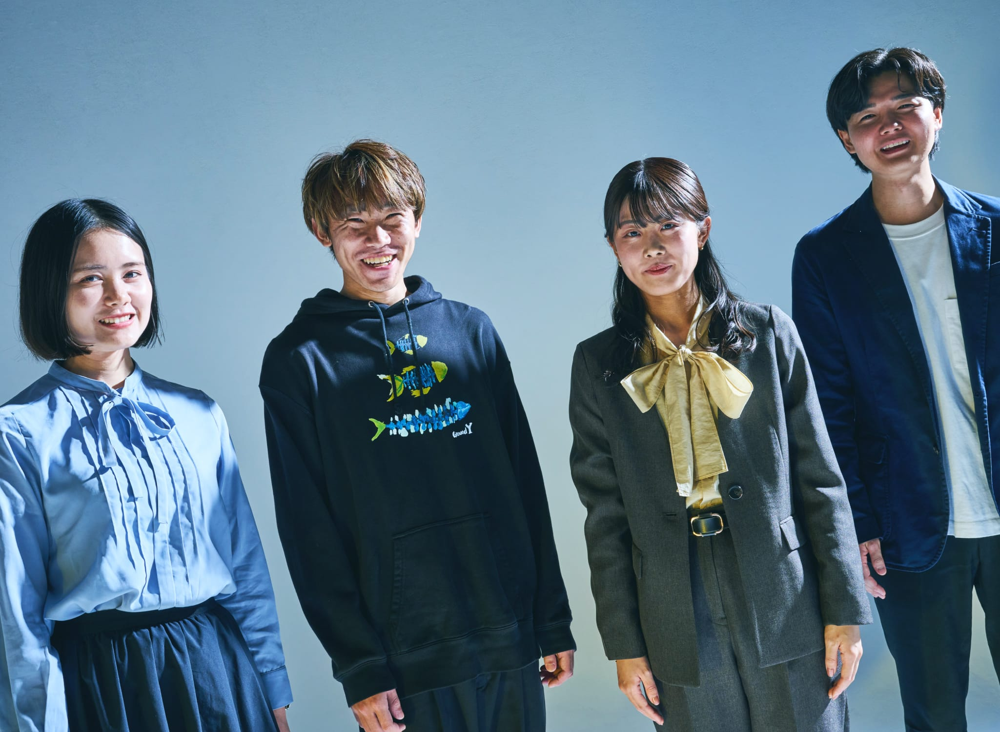
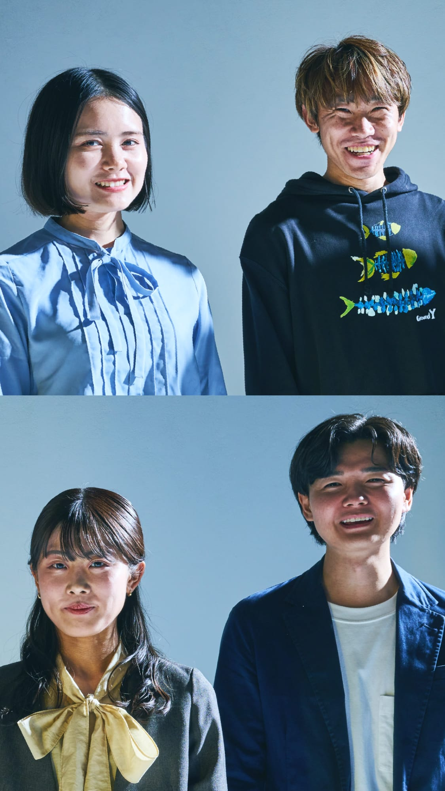
莉子の本音
「東映＝映画
だけじゃなかった！」
- RIKO
- この4年間で映画部門以外の仕事を経験して、東映って本当にいろんな事業や部署があることを改めて実感したよ。もちろん入社前から映画だけじゃないことは知っていたけど、想像以上だった。
- SEIYA
- そうそう。それこそ、莉子ちゃんが携わっていたイベント事業も、キャラクターショーなど東映のコンテンツに関連するものだけでなく、外部コンテンツの展覧会の企画や運営も展開していて、その幅広さには驚いたよ。
- FUKA
- それに、管理部門の仕事も、すごく東映らしいよね。管理部門ってどんな会社にもあるけど、東映はおもしろいことができる。例えば人事部だったら、採用に関するイベントをするにしても、エンタメ性を意識するとかね。
- SEIYA
- 僕も経理部で直接映画に関わる部署ではなかったけど、映画づくりにはどれくらいお金がかかるのか知れてすごく勉強になったな。小道具一つとっても、こんなにこだわるんだなって。
- SHOTARO
- どんな仕事をしていても、めざす方向性は同じだよね。そして、全然違う仕事に就いたとしても、前の部署のつながりや経験は活かせると思うし。
- RIKO
- 本当にそう。すべての部署が東映を支える大切な役割を担っていて、 “愛される「ものがたり」を全世界に”というビジョンを胸に仕事しているって知ることができたよ。
翔太郎の本音
「想像より地味で
泥くさい仕事もある！」
- SHOTARO
- エンタメって聞くと派手で楽しいイメージがある人も多いと思う。もちろん華やかな部分もあるけど、裏側ではその何倍も地味な調整や準備がある。その努力が実ることもあれば、うまく行かないことも当然あるんだよね。
- RIKO
- 本当にそう。私がやっていたイベント事業も、開催日はお客さまに見てもらえる楽しみな時間だけど、事前準備の1から10までがあってこそ味わえる、ご褒美みたいなものだなって。商品の並べ方にもすごくこだわるし、細かいところまでお客さまの視点に立って調整を重ねているから、喜んでいただけるんだよね。
- FUKA
- 現場で動いている部署の人も、実はデスクワークをしている時間が多いよね。それは意外だったな。
- SEIYA
- 映画営業部の仕事も、出張や外回りよりデスクワークの方が長いよ。
- FUKA
- そういう地味に見える仕事も、結果エンタメにつながっているから、がんばれているのかなって感じる。
- SEIYA
- 僕たちがつくったものがお客さまの活力になるって想像したら、がんばりたくなるよね。
- RIKO
- SNSでうれしい反応をもらえることも励みになるし。
- SHOTARO
- 華やかな部分はあくまで結果。大切なのはそこに至る過程っていうのは、エンタメ業界に限らず、どの仕事にもいえることなのかもしれないね。
聖矢の本音
「若手にも
チャンスは無限大！」
- SEIYA
- 東映は歴史の長い会社だから、トップダウンの古い体質なのかなって思ってた。でもそのイメージはガラッと変わったよ。例えば、3週間に一回、若手でアイデアミーティングをやっていて。映画をヒットさせるための施策を出し合っているんだけど、実際に形になったアイデアがいくつもあるよ。若手にもチャンスはたくさんあるなって感じてる。
- RIKO
- 事業推進部と人事部を経験しているけど、どちらも若手のうちからどんどん挑戦させてもらえる風土は同じ。事業推進部では、1年目から「企画をどんどん出していいんだよ」と言ってもらえたし、人事部では、D&I推進としてお菓子を使った社内向けイベントを実現したよ。先輩がどんどん背中を押してくれるから、早いうちから色々な体験をさせてもらえるよね。
- FUKA
- 聖矢くんや莉子ちゃんの企画が実現した話、私たちも聞いてるよ。先輩たちが、「〇〇さんがアイデア出してくれました」って普段から共有してくれるから、部署が違ってもお互いの仕事を知ることができるんだよね。若手の活躍をみんなで盛り上げてくれるのって、東映の良いところだよね。
- SEIYA
- そうそう。アイデアは僕でも、実際に形にしてくれたのは先輩なんだけどね。「発案者は聖矢です」って、わざわざ伝えてくれる先輩の懐の深さを感じるよ。
- RIKO
- この前サッカー観戦に行ったら、東映のキャラクターとのコラボ企画やってたよ。
- SHOTARO
- おお、来てくれたの？
- FUKA
- 翔太郎が担当したの？
- SHOTARO
- そう！ずっとサッカーをやってて、入社１年目から「スポーツに関わりたい」って言い続けてたんだ。そしたらスポーツに関係する案件は声をもらえるようになって。今回も憧れの選手に会えたり、控え室に入れたり、すごく楽しかったよ。
- RIKO
- すごい！つながったんだ。
- SHOTARO
- 東映はやる気があれば本当に任せてくれる。どの部署にいても、やりたいことがあったら発信すべきって思うよ。
風香の本音
「東映の歴史力は
想像以上！」
- FUKA
- 会社の名前が世の中に知られていることってすごく強みだと思いつつ、秘書部になって会社単位のやり取りに関わる機会が増えたからか、重みも感じるようになった。これまで築いてきた東映の信頼を、私たちが保ち続けなきゃいけないんだなぁって。
- SEIYA
- わかる。僕の部署では古くからお付き合いのある劇場さんもいらっしゃるから、これまで築いてきた関係値を崩しちゃいけないなって思うよ。
- RIKO
- 長くやっているコンテンツは、私よりもファンの方のほうが詳しいことも多いよね。その期待を裏切らないようなイベントにするには、プレッシャーもあったなぁ。
- SHOTARO
- コンテンツの力は大きいよね。何か新しい企画をするとき、他社に問い合わせるんだけど、コンテンツを知ってくれている分、「○○見てます！」「知ってます！」と好意的な対応をしてもらえることがすごく多いよ。
- FUKA
- 説明不要なんだよね。
- SHOTARO
- だからある意味、勘違いできちゃう（笑）
- SEIYA
- コンテンツや東映の力に助けられてるのに、自分の実力だと思っちゃうってことか。
- SHOTARO
- そう、だからこそ甘んじてはいけないって思うよ。
- RIKO
- 現場に行くと自分より経験豊富な方だらけで、未熟さを痛感するんだよね。
- FUKA
- そうだね。4年目の私たちよりもずっと長く東映と仕事をして、東映のことを知ってくれている他社の方が、たくさんいらっしゃるよね。
- RIKO
- たくさんのプロフェッショナルが助けてくださって、今の東映がある。そのことに敬意と感謝を忘れてはいけないね。
４年目の
私たちの結論。
- SHOTARO
- 改めて４年目を迎えた今、どんなことを感じてる？
- SEIYA
- 新卒の頃は、映画の企画に関わりたい気持ちがすごく大きかったけど、今はいい意味で、映画をつくっているのは企画職の人だけじゃないことがわかったし、東映の仕事を広く知ることが、いつか企画に関われるようになった時に活きてくるなって感じてる。
- SHOTARO
- 聖矢、メラメラ感なくなった（笑）？
- SEIYA
- 成長したんだよ（笑）
- FUKA
- 本当に、どんな仕事もつながっているよね。すべての仕事がつながっていて、すべてが東映に必要。だから自分自身も柔軟にキャリアを積んでいけばいいっていうのを、心から実感してるよ。
- RIKO
- 入社してみんな違う部署に配属されてバラバラになったように感じていたけど、仕事でやり取りすることも増えたし、やっぱり同じ方向に向かっているよね。４年経ったからこそ、それを強く感じているよ。
- SHOTARO
- 4年って、もう新人じゃないじゃん。社内でも実績が認められてきて、その反面、重みもあるよね。成長はしているはずだけど、まだ確信はないみたいな。
- SEIYA
- 成長って目に見えるものじゃないからね。
- SHOTARO
- そう、まだまだだなって思うよ。
- FUKA
- すべてがつながっていることがわかったからこそ、自分はまだまだって思うよね。たくさんの人がつくってきた東映の一員として胸を張れるようになるには、まだまだこれからなのかな。